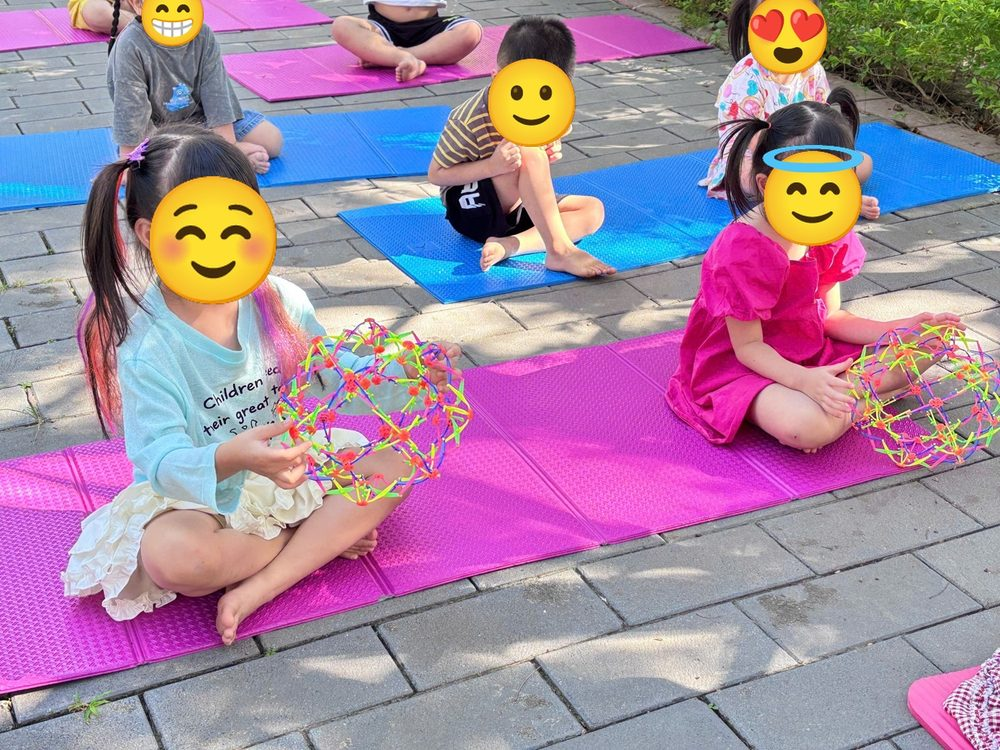

Chánh niệm
Hơi thở bong bóng: giúp bé bình tĩnh trong 1 phút

Khi bé buồn hay tức giận, hơi thở là “nút bình tĩnh” bé luôn mang theo bên mình.
Cách làm
- Ngồi thoải mái, hai tay khum lại trước miệng như đang cầm cây thổi bong bóng.
- Hít vào thật sâu bằng mũi, đếm 1, 2, 3.
- Thở ra thật chậm bằng miệng, như đang thổi một quả bong bóng thật to mà không để vỡ.
- Tưởng tượng bong bóng mang nỗi buồn bay lên trời.
- Lặp lại 3 đến 5 lần.
Mẹo
Tập lúc bé đang vui trước, để khi bé giận, bố mẹ chỉ cần nói “mình thổi bong bóng nhé” là bé nhớ ngay.